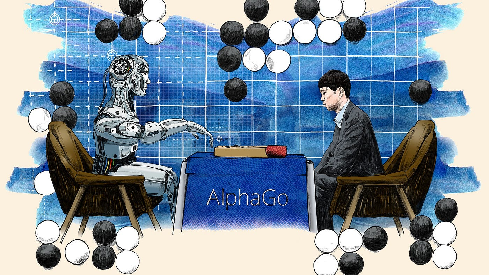
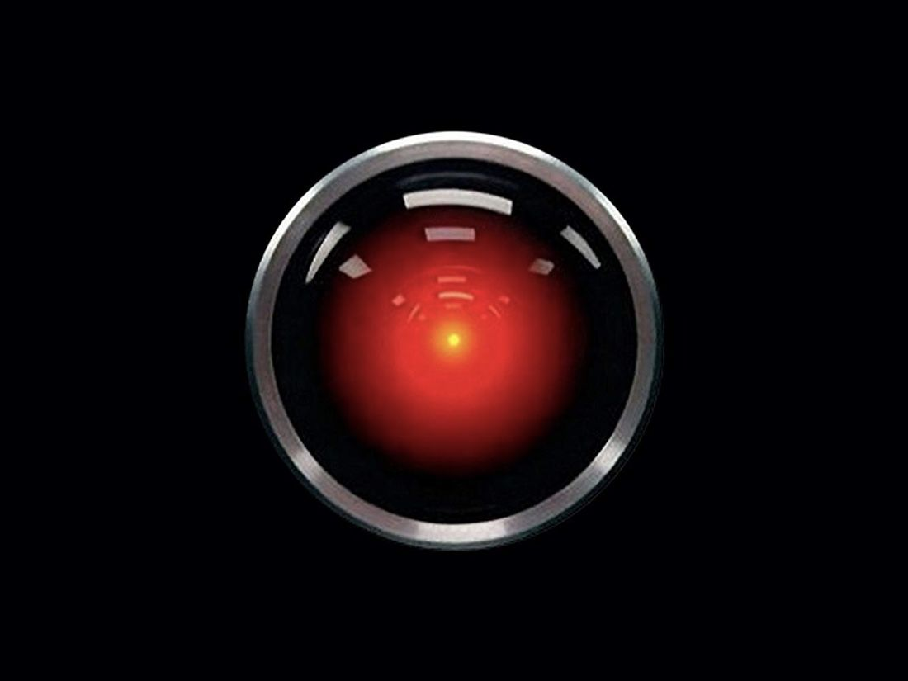

Artificial Intelligence
A Threat or Gift to Modern Man
Computers started with us. It started with the idea of making something real with the abstract existence of doing calculations (in a certain way, it's a
genre of thinking) using mental labor. The idea of “Inventing another mind just like us or probably better than us” just came after that. People have
fantasized about creating a non-human intelligent object or life for a long time. We even call ourselves
“Homo Sapiens"
or The Wise Man”; intelligence resides in why we become so eminent in survival. The master craftsman attempted to create the same for centuries, certainly in a different way for different
purposes. And only recently, we have achieved a somewhat close result which was deemed impossible some centuries ago.
My ambition with this write is to clearly and with an open mind explore “what artificial intelligence is,” “to give philosophical and scientific credentials
of what it is and becoming," and finally, most important, how it became what it is today.” Before starting with everything, by answering if
“artificial intelligence is a threat or not” to “why it came into existence.” And study the philosophical aspects of artificial intelligence. We should
answer the most certain question “What is intelligence?” and then “What is artificial?”.
started with us. It started with the idea of making something real with the abstract existence of doing calculations (in a certain way, it's a
genre of thinking) using mental labor. The idea of “Inventing another mind just like us or probably better than us” just came after that. People have
fantasized about creating a non-human intelligent object or life for a long time. We even call ourselves
“Homo Sapiens"
or The Wise Man”; intelligence resides in why we become so eminent in survival. The master craftsman attempted to create the same for centuries, certainly in a different way for different
purposes. And only recently, we have achieved a somewhat close result which was deemed impossible some centuries ago.
My ambition with this write is to clearly and with an open mind explore “what artificial intelligence is,” “to give philosophical and scientific credentials
of what it is and becoming," and finally, most important, how it became what it is today.” Before starting with everything, by answering if
“artificial intelligence is a threat or not” to “why it came into existence.” And study the philosophical aspects of artificial intelligence. We should
answer the most certain question “What is intelligence?” and then “What is artificial?”.
What is Intelligence?
What is Mind ? What is Intelligence? These questions have tantalized philosophers for millennia. Intelligence, in the most basic way, is the ability to learn, understand, and apply knowledge. Defining and coming up with a single agreeable definition is unreachable to an extent because of its complex abstract concept. Likewise, the Mind is also a similar complex abstract concept.[1]
What is Artificial?
Artificial is something that is created by humans rather than occurring naturally. It can be a simple tool to a very complex mechanical machine.With these questions, we can conclude what we mean by Artificial Intelligence. AI is an artificial form of intelligence. We try to put intelligence into a man-made instrument. Thus, fulfilling the desire to become a god in some sense (hahaha).
Before going through the history of artificial intelligence briefly, I want to point out the differences between Artificial Life and Artificial Intelligence.
For general talking, we have short-formed
artificial intelligence to AI and
artificial life to Alife . “ALife is the bottom-up scientific study of the
fundamental principles of life,” as mentioned in one article by The Gradient.[2]
The difference is in ALife; humans are trying to create life from scratch,
not just creating a silicon-based intelligence.
. “ALife is the bottom-up scientific study of the
fundamental principles of life,” as mentioned in one article by The Gradient.[2]
The difference is in ALife; humans are trying to create life from scratch,
not just creating a silicon-based intelligence.
The History from Ancient Times to Today
Let's talk about some succulent content. The notion of AI or ALife has been around for centuries, and it can be investigated in plenty of fiction and ancient texts. Some earliest attempts at the same can be found in ancient Greek mythology . Ovid's narrative poem
Metamorphoses[3]
expresses the love of Pygmalion, a Cypriot sculptor, for his statue,
Galatea, which came into existence after watching the Propoetides of Cyprus practicing prostitution. On Aphrodite's festival day, the king, Pygmalion,
asks the Aphrodite Goddess of love to make the statue real, and she makes his wish come true. This event influenced countless literary adaptations and
inspired countless works of art.[4]
. Ovid's narrative poem
Metamorphoses[3]
expresses the love of Pygmalion, a Cypriot sculptor, for his statue,
Galatea, which came into existence after watching the Propoetides of Cyprus practicing prostitution. On Aphrodite's festival day, the king, Pygmalion,
asks the Aphrodite Goddess of love to make the statue real, and she makes his wish come true. This event influenced countless literary adaptations and
inspired countless works of art.[4]
Another early example of artificial intelligence can be found in the story of the Golem .The Golem is a Jewish folklore in which the entire creature is created from clay or mud. The most famous one narrates the golem being created by a rabbi in Prague. Golem’s sole nature was mentioned as protective against its creator and capable of doing tasks as an ordinary being, but it didn't have the power to speak. Unlike Brazen Head, a legendary automaton in the early modern period.[5]
One personal favorite metaphysical and philosophical mention of artificial creation is in Brihadaranyaka Upanishad ,one of the oldest Upanishads, which is a part of the Yajur Veda (one of the four Vedas) in the ancient scriptures of Hinduism. The Brihadaranyaka Upanishad tries to attain a philosophical peak by answering challenging and unanswerable questions based on the nature of consciousness, the soul, and the universe. I would like to highlight one section in which sage Yajnavalkya scrutinizes the thorough nature of consciousness and argues that consciousness is in everything and not limited to the human mind. This is a deep-seated idea, and it answers fundamental aspects of reality.[6] He says:
"Consciousness is not in the eye, nor in the ear, nor the mind, nor the speech, nor the breath, nor the skin, nor the flesh, nor the blood, nor the bones, nor the marrow. Consciousness is within everything."
Here I would like to put up a new thing called an automaton. Not actually new, but have a fundamentally more discrete idea than AI or ALife. Automaton is a moving mechanical device that imitates a human being. If you argue, in a broad sense, we can define it as a mechanical device that performs a function according to a predetermined set of coded instructions.
Lapsing back to ancient Greece, we can glimpse numerous automatons, from wash basin automatons to windmills. The most attractive of all is the recently
discovered
Antikythera Mechanism , a complex astronomical computer built in the 1st century BC. In the same chronicle, we can experience automatons in
ancient Egypt in the form of statues or figurines competent in performing simple actions. But in Ancient China, automata development has a different
story. The
Chinese created various automata
, including mechanical birds that could sing, fish that could swim, and puppets that could perform dances.
The invention of varied automata continued again in the Middle Ages. In the 14th century, One of the most famous medieval automata was built called
the
Strasbourg Clock
, a large astronomical clock. Subsequently, the Renaissance saw a renewed interest in automata, and many renowned artists and
inventors designed their own automata.
, a complex astronomical computer built in the 1st century BC. In the same chronicle, we can experience automatons in
ancient Egypt in the form of statues or figurines competent in performing simple actions. But in Ancient China, automata development has a different
story. The
Chinese created various automata
, including mechanical birds that could sing, fish that could swim, and puppets that could perform dances.
The invention of varied automata continued again in the Middle Ages. In the 14th century, One of the most famous medieval automata was built called
the
Strasbourg Clock
, a large astronomical clock. Subsequently, the Renaissance saw a renewed interest in automata, and many renowned artists and
inventors designed their own automata.
For example, the infamous Leonardo da Vinci sketched a flying automaton . The 18th and 19th centuries initiated a golden age for automata. Many automata were brought into existence during this period, including the Jaquet-Droz automatons , which could write, draw, and play music. However, in the 19th century, the focus of why automata were developed started shifting to reducing factory physical labor. Continuing to the 20th and 21st centuries, we saw the development of new and more complex automata.[7]
Here I would like to take a little time and argue automatons were just a resemblance of humanly activities, physical or intellectual but didn't pose any learning skills.
Writing has shaped the ideology of the general audience for a long time. And we could see similar things happening in the last century. In the last two centuries, when artificial intelligence was becoming a concept that could be a reality in a few years, we saw some fine literature being published and influenced by it. Those pieces include Mary Shelley's Frankenstein [8], Karel Capek's R.U.R.[9], and Philip K. Dick's Do Androids Dream of Electric Sheep?[10] These works try to predict the potential dangers of artificial intelligence. These fiction have a solid resemblance with its characters being monsters, only the difference being they are man-made. But they also portray the positive, helpful side of AI.
Thus, artificial intelligence has always been the subject of speculation; some believe it will surpass the human race, and some believe it will revolutionize the world, solving world hunger. Only the future, with rolling time, will shed light on the visible consequences of this technology. Even then, This might not be the “artificial intelligence” that we learned it to be. Till now, we have considered an approach to ALife in some way, the idea of creating an artificial being, a man-made monster. Because people didn't imagine the idea of what artificial intelligence will become in the form of computers,
The idea of AI is that computers at the base are computers themselves but with the capability to think and learn from data. In the 20th century, only we have reached the intelligence peak in all of human history in every field, like psychology, philosophy, etc., to achieve the technological and theoretical requirements to make AI a reality and the general public getting introduced to abstract flat-screen interfaces.
In the first half of the 20th century, science fiction introduced the world to the concept of artificially intelligent robots; the next half century was the time of a generation of scientists, mathematicians, and philosophers with the concept of artificial intelligence (or AI) making it the reality.
One such person was
Alan Turing . Due to his contributions, a movie is out there biographing him called “The Imitation Game,” an amazing piece of art. He
was a young British polymath who explored the mathematical possibility of artificial intelligence. Turing came up with a paper in 1950 called “Computing
Machinery and Intelligence,”[11]
where he came up with the idea of machines doing the same, solving problems by coming up with reasoning. This paper also
explored “the Turing test,” how to test their intelligence which was based on the indistinguishable conversation between an AI against a human. This
formulated the benchmark for measuring the progress of AI research, but it has been criticized for being human-centered occasionally.
. Due to his contributions, a movie is out there biographing him called “The Imitation Game,” an amazing piece of art. He
was a young British polymath who explored the mathematical possibility of artificial intelligence. Turing came up with a paper in 1950 called “Computing
Machinery and Intelligence,”[11]
where he came up with the idea of machines doing the same, solving problems by coming up with reasoning. This paper also
explored “the Turing test,” how to test their intelligence which was based on the indistinguishable conversation between an AI against a human. This
formulated the benchmark for measuring the progress of AI research, but it has been criticized for being human-centered occasionally.
Before this point in time, we didn't have the technological achievement to implement the idea of AI. The problem was they couldn't store commands. To be
precise, in 1949, the first stored-program computer came called
Manchester Mark 1 .[12]
The slow development of computers as deep pockets were needed to invest
in them became the reason behind the late entrance of AI.
With the progress in computers, the first AI program was written named “Logic Theorists”[13]
by Newell and Simon after consulting the RAND Corporation in
1955 when the field of AI was not around. It was the first program deliberately coded to perform automated reasoning and mimic the problem-solving
skills of a human.
.[12]
The slow development of computers as deep pockets were needed to invest
in them became the reason behind the late entrance of AI.
With the progress in computers, the first AI program was written named “Logic Theorists”[13]
by Newell and Simon after consulting the RAND Corporation in
1955 when the field of AI was not around. It was the first program deliberately coded to perform automated reasoning and mimic the problem-solving
skills of a human.
The following year’s summer, The
Dartmouth Summer Research Project [14]
on Artificial Intelligence was held. This is widely considered to be the founding
event for the field of artificial intelligence. The notion of
neurons
to creativity for a computer was discussed led by researchers from different domains.
After the event, the plans and goals to develop AI were staged.
[14]
on Artificial Intelligence was held. This is widely considered to be the founding
event for the field of artificial intelligence. The notion of
neurons
to creativity for a computer was discussed led by researchers from different domains.
After the event, the plans and goals to develop AI were staged.
In 1966, Joseph Weizenbaum developed
ELIZA [15], a natural language processing computer program that simulated conversation. In its most famous script, “Doctor”
was simulated to interact like a Rogerian psychotherapist. Not perfect, but a big step in AI research.
[15], a natural language processing computer program that simulated conversation. In its most famous script, “Doctor”
was simulated to interact like a Rogerian psychotherapist. Not perfect, but a big step in AI research.
Only in the 1980s did South Korea enter the race by seeing interesting tensions created by the Governments of the US and Japan for AI and formed the very first AI research group in Korea.[16]
In 1997, a controversial match between a human and AI went down. The defeat of world chess champion
Garry Kasparov against the AI,
“Deep Blue”
against the AI,
“Deep Blue” by
IBM[17],
marked a milestone in AI’s development. Controversial because it raised a lot of questions about AI’s competence, as Chess was considered the exclusive
domain to humans.
by
IBM[17],
marked a milestone in AI’s development. Controversial because it raised a lot of questions about AI’s competence, as Chess was considered the exclusive
domain to humans.
Nearly a decade later, Watson[18] was developed by the very same IBM, with the
motive of answering questions to the then popular quiz show
“Jeopardy.” Then
in 2011, it competed against champions Brad Rutter and Ken Jennings, winning the first prize.
Then
in 2011, it competed against champions Brad Rutter and Ken Jennings, winning the first prize.
Google jumped in 2016 with their computer program to hoard some gems of AI to their name. In 2016, AlphaGo [19] defeated Go champion Lee Sedol. If you might not know this game, this game is very complicated compared to Chess. It marked one of the breakthroughs in the development of AI.
Now coming to today’s scenario. The hottest topic today, after launching three years back, is OpenAI[20]
. The initial release of GPT-3[21]
, a large language model,
was able to generate human-quality text and do creative tasks.
It was just showing its potential when its successor
ChatGPT was released, which took the internet by storm. These models are still under development,
but they have changed the definition of what AI could do and might revolutionize the field of AI in the future, again. With OpenAI in the competition,
other companies globally, like Microsoft launching
Bing AI search and Google introducing
Bard, have taken their chance.
was released, which took the internet by storm. These models are still under development,
but they have changed the definition of what AI could do and might revolutionize the field of AI in the future, again. With OpenAI in the competition,
other companies globally, like Microsoft launching
Bing AI search and Google introducing
Bard, have taken their chance.
South Korea has come a long way in the field of AI by implementing AI in a wide range of areas; we can see that in companies like Naver,
Samsung, Kakao, etc.
Artificial Intelligence Timeline -

20th century's Artificial Intelligence Timeline
https://i0.wp.com/sitn.hms.harvard.edu/wp-content/uploads/2017/08/Anyoha-SITN-Figure-2-AI-timeline-2.jpg
Threat or Gift
I will try to make it short as it is going too long.We all laughed nervously over the cartoons and enjoyed movies like “2001: A Space Odyssey” and “The Terminator” portraying AI’s negative capabilities to harm the human race. It met the end with truth in February of 2023 when Microsoft's Bing threatened a curious student from Germany who tried to put it to its limits.[22] And this is just one event among much other loss of control self-driving cars meeting with accidents. AI has caused issues like job displacements, privacy issues (deep-fakes), safety (self-driving car accidents), bias (biased data on the internet used for training), and loss of control.
Recently with AI showing its power, OpenAI’s CEO Sam Altman met with the US Congress to regulate the development of AI. [23] This was to prevent the AI from being out of control. These systems have become so complex that we can’t predict how they will act whenever the new “updated version” is run. The same kind of thing happened a few years back when people signed an open letter to stop the development of AI for at least six months.[24]
Putting my point of view now, I believe the development of AI can’t be stopped. There are many people out there who have invested their lifetime, millions of dollars into this tech. But we can try to regulate and restrict the parameters to protect the future. Well, in the end, we are researching AI to make our life easier and better, the same thing we did not so long ago with computers.
Bibliography
- Artificial Intelligence: The very idea by John Haugeland
- Introduction to Artificial Life for People who Like AI
- Ovid's Metamorphoses, Book X
- Pygmalion And Galatea: A Myth About Creation And Love
- Talmud, a collection of Jewish law and tradition
- The Sacred Books of the Hindus, Vol. 15, Part 1, by Max Müller (1899)
- The Role of Automata in the History of Technology by Silvio A. Bedini
- Frankenstein by Mary Shelley (1818)
- R.U.R. by Karel Capek (1920)
- Do Androids Dream of Electric Sheep? by Mary Shelley (1968)
- Computing Machinery and Intelligence by A. M. Turing (1950)
- Wikipedia: Manchester Mark 1
- Wikipedia: Logic Theorists
- A Proposal for the Darmouth Summer Research Project on Artificial Intelligence by J. McCarthy and others (1955)
- Wikipedia: ELIZA
- Hangul And The “Spring” Of Artificial Intelligence Research In South Korea
- IBM’s Deep Blue Article
- Wikipedia: IBM's Watson
- Mastering the game of Go with deep neural networks and tree search by Nature Magazine
- OpenAI Docs
- Wikipedia: GPT 3
- The New AI-Powered Bing Is Threatening Users. That’s No Laughing Matter by Time
- Sam Altman: CEO of OpenAI calls for US to regulate artificial intelligence by BBC news
- Pausing AI Developments Isn't Enough. We Need to Shut it All Down by Time Magazine